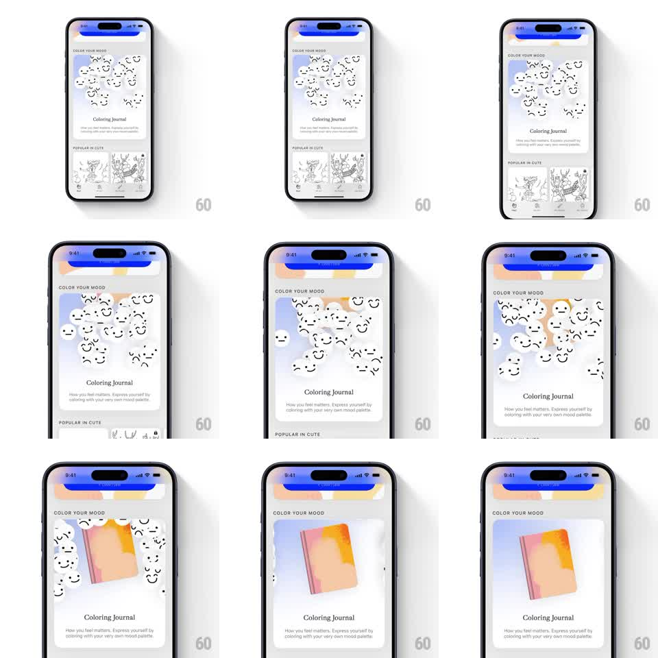

Media
Frame-by-frame

Rebuild this animation 1:1: a feature card reveal where a cloud of floating hand-drawn mood faces (smileys, scribbles) drifts apart and morphs into a 3D coloring journal book that rotates into place at the card's center.

Rebuild this animation 1:1: a feature card reveal where a cloud of floating hand-drawn mood faces (smileys, scribbles) drifts apart and morphs into a 3D coloring journal book that rotates into place at the card's center.
## Integration
Integration: stack-agnostic spec - springs given as stiffness/damping, timed motions as duration + curve; map every value to your framework and animation library of choice.
## Scene
Light app screen: "COLOR YOUR MOOD" section header, a large feature card ("Coloring Journal" + description), a "POPULAR IN CUTE" rail below. The card's illustration stage starts filled with ~15 floating doodle faces and ends with a peach-gradient journal book standing center.
## Motion spec
Pattern: ambient intro morph, ~3s, fires when the card scrolls into view.
- Doodle faces float gently (each translateY +-4px, individual 2-3s periods, slight rotations).
- Convergence: faces drift toward the card's center while scaling down and fading (600ms, ease-in, each with a randomized 0-200ms delay).
- The book materializes: scales 0.3 -> 1 with a soft spring (~280/20) while rotating from -12deg to 0 (like a page being placed).
- A warm gradient wash sweeps across the card background as the book lands (400ms).
- Settle: book idles with a tiny float (+-3px, 3.5s); a few faces remain faintly at the edges.
## Calibration
- The convergence timing sells the morph - faces must clearly become the book, not vanish before it appears (overlap the two phases by ~200ms).
## Reduced motion
Crossfade from face cloud to book (300ms).
## Don't miss
- Faces are hand-drawn line style; the book is soft 3D - the style contrast is the charm.
- The book's cover gradient (peach-to-amber) matches the background wash.